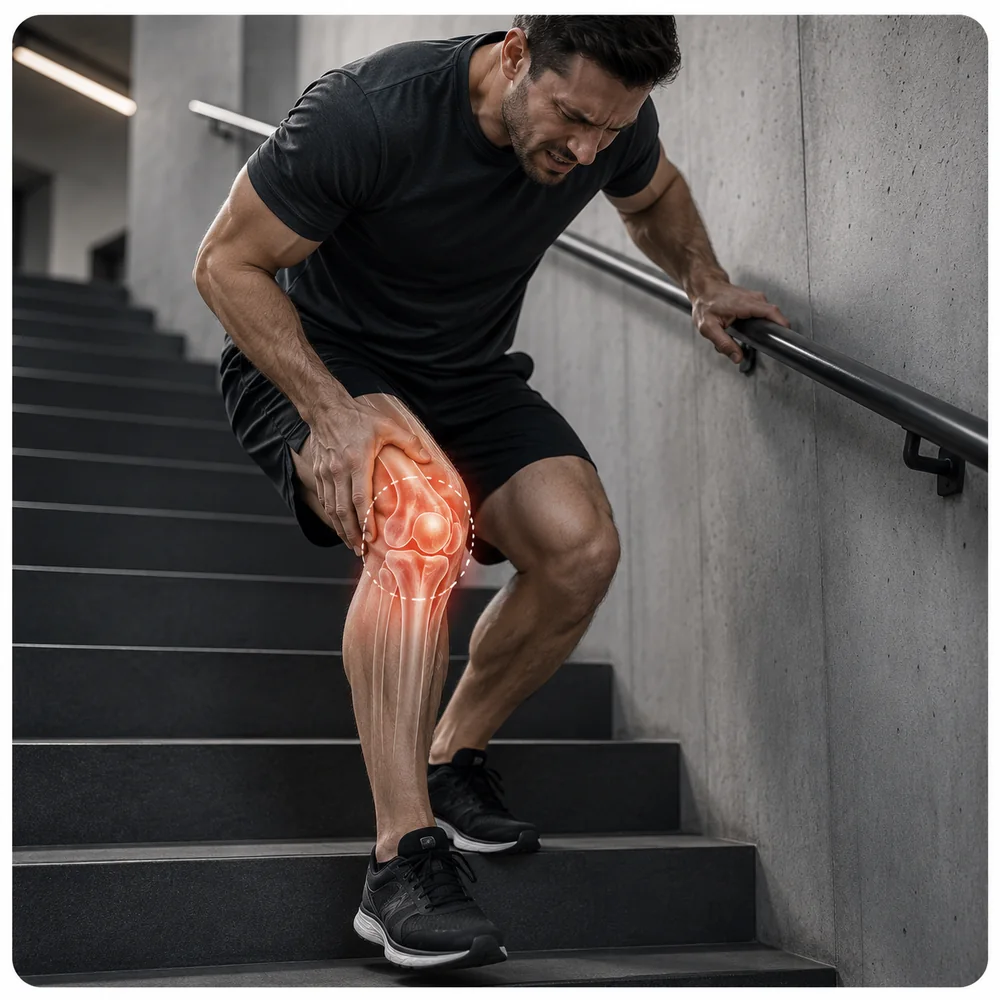
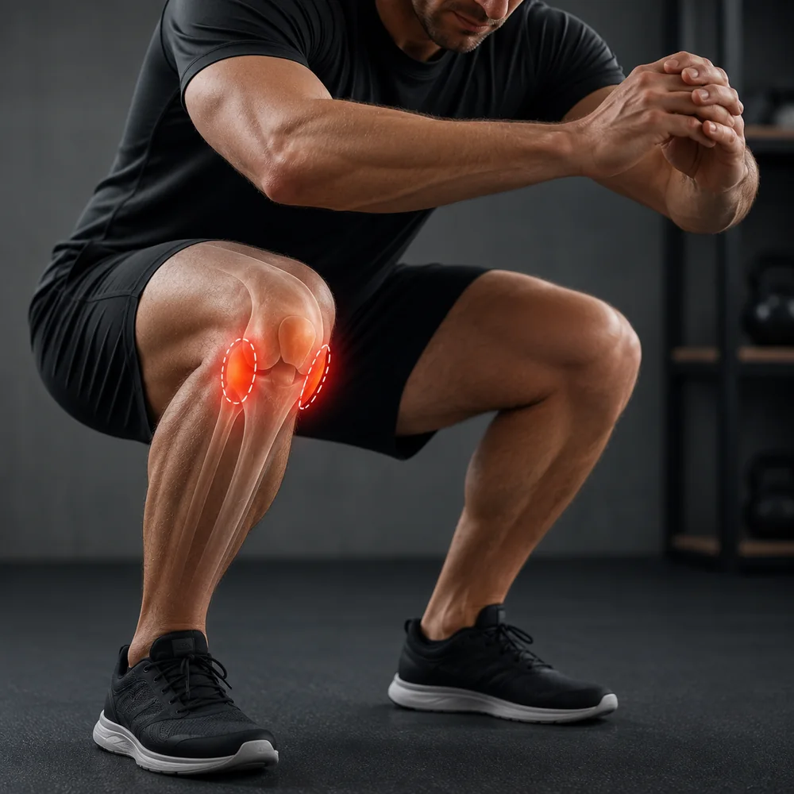
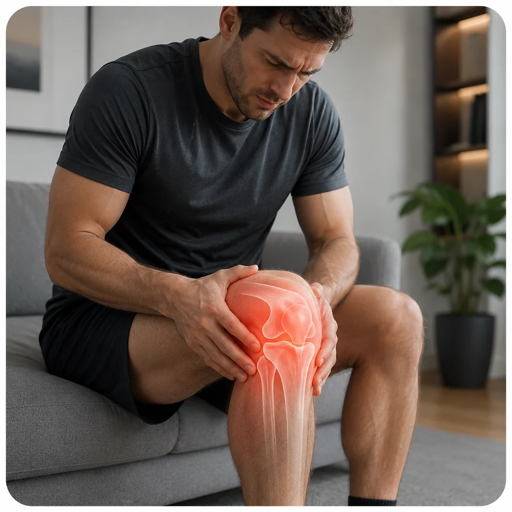
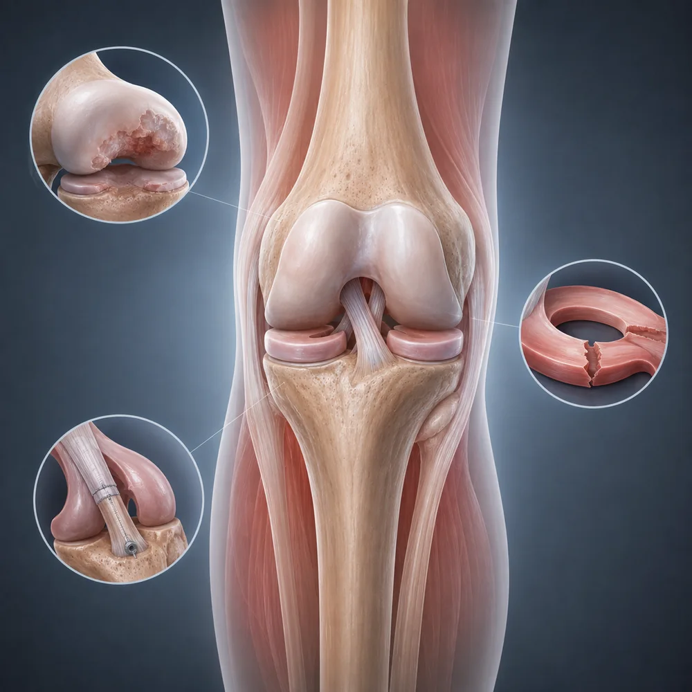
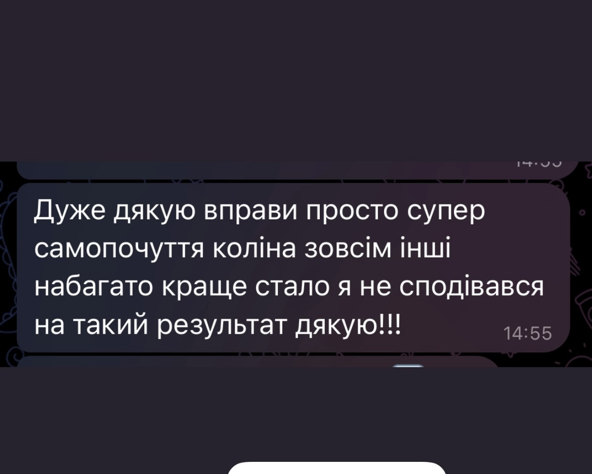
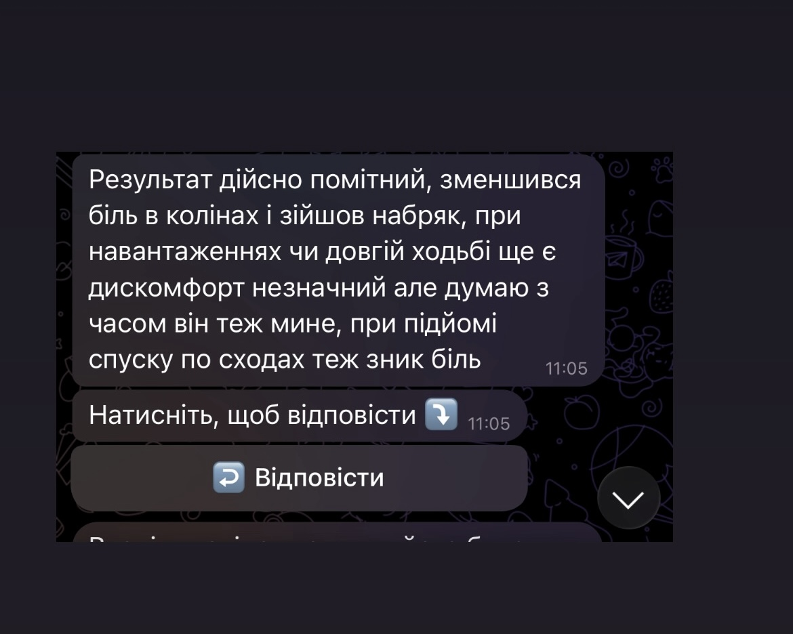
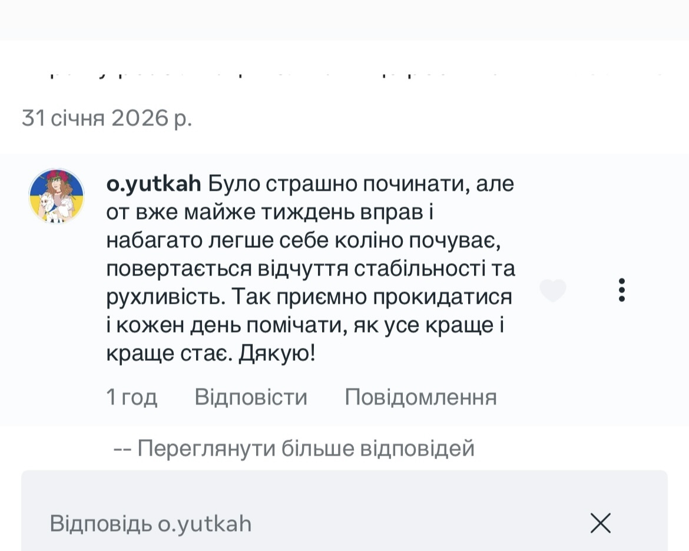
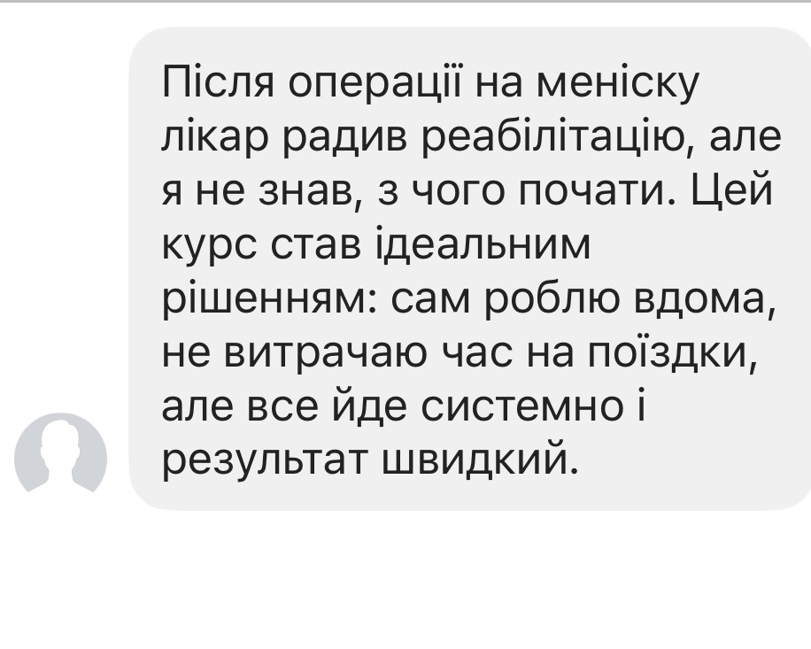
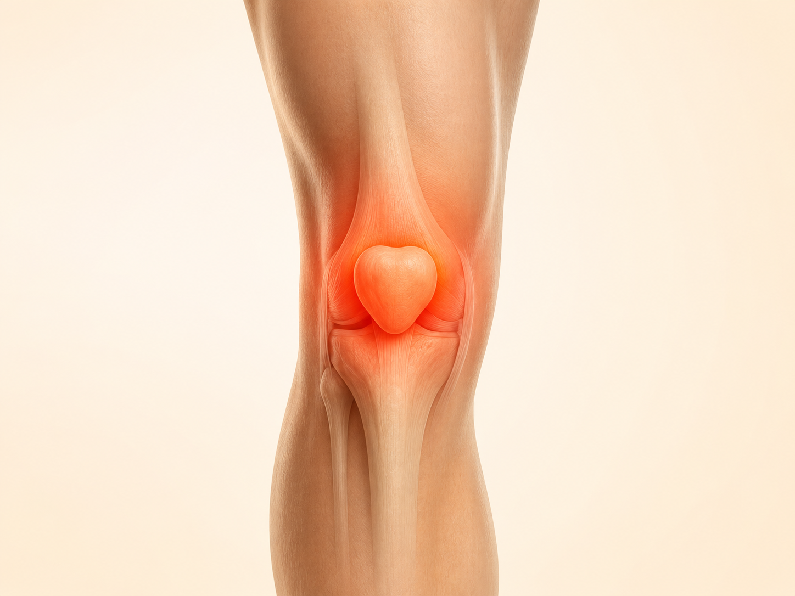
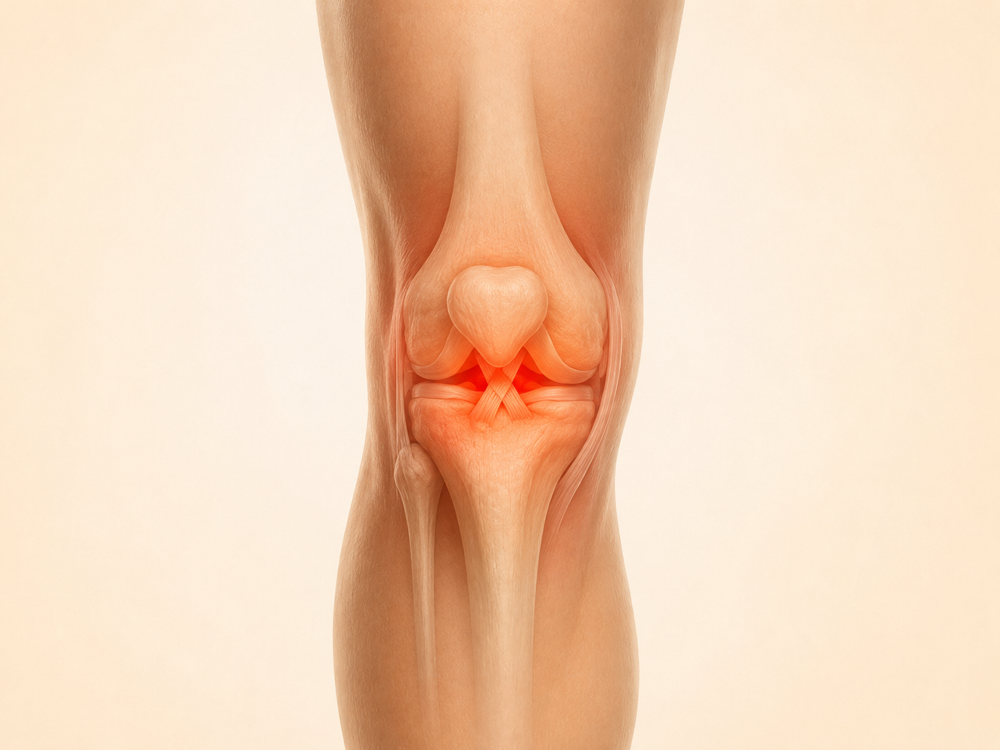

Біль спереду коліна
Під або навколо колінної чашечки, особливо при сходах, присіданнях чи довшій ходьбі.
Авторська програма від фізичного терапевта із понад 10-річним досвідом
Покрокова програма допоможе поступово повернути рухливість, силу та здатність коліна переносити звичне навантаження — від простого рівня до складніших рухів.
Повна програма за 390 грн 1899 грн
Доступ одразу після оплати • Telegram • 14 днів гарантії
Впізнаєте свою ситуацію?

Під або навколо колінної чашечки, особливо при сходах, присіданнях чи довшій ходьбі.

З’являється під час ходьби, присідань, поворотів або фізичного навантаження.

Після активного дня, тренування чи довшої ходьби з’являється припухлість або скутість.

Артроз, травма меніска, ПХЗ або відновлення після операції — коли вже дозволене активне навантаження.
Локалізація болю сама по собі не визначає діагноз. При свіжій травмі, значному набряку, блокуванні руху або різкому погіршенні стану спочатку потрібна оцінка фахівця.
Чому біль може повертатися
Коли через біль або травму ви певний час менше навантажуєте ногу, м’язи поступово втрачають силу. Тому навіть якщо біль уже став меншим, коліно ще може бути не готовим до звичних сходів, присідань, довгої ходьби чи тренувань.
Важливий момент
Щоб біль не повертався при кожному збільшенні активності, важливо поступово повертати силу, рухливість і здатність коліна справлятися з навантаженням.
Саме для цього створена програма
Що робити зараз → скільки виконувати → як оцінити реакцію → коли переходити далі. Усе вже зібрано в одній програмі.

Короткі відео з технікою, повтореннями, підходами та варіантами прогресії.

Від базової рухливості й контролю — до сили, балансу та активніших навантажень.

Щоб не ускладнювати вправи навмання й розуміти, коли коліно готове рухатися далі.

Кількість повторень, підходів та орієнтири для поступового збільшення навантаження.
Ви не отримуєте 70+ відео одним списком. Спочатку — доступний базовий рівень, потім перевірка готовності й лише після цього — складніші силові та функціональні вправи.
Не потрібно самостійно збирати програму з різних відео — у Telegram ви бачите етап, вправи, дозування та критерії переходу.
Чому не просто YouTube або Instagram
У безкоштовних відео рідко є відповідь саме на вашу послідовність навантаження.
Як усе це виглядає на практиці
Етапи, вправи, тести, бонусні матеріали та нагадування зібрані в одному місці. Не потрібно самостійно складати план із десятків різних відео.
Коротко про досвід учасників








Додатково до основної програми
Короткі пояснення, які допомагають краще зрозуміти логіку навантаження у різних ситуаціях.

Пателофеморальний біль

Сухожилля надколінка

Зовнішня зона коліна

Повернення навантаження

Рухливість і сила

Контроль і прогресія
Повний доступ одразу після оплати
14 днів гарантії повернення коштів
Поширені запитання
Можна спробувати без зайвого ризику
Якщо після знайомства з матеріалами ви зрозумієте, що формат вам не підходить, напишіть протягом 14 днів — оплату буде повернено.